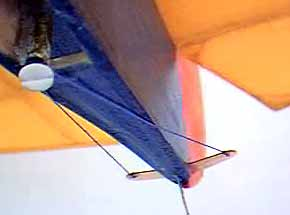

| The picture shows the simple pull - pull ruder control I rigged up. A nylon 2-56 bolt is threaded into a scrap of inner nyrod that was tapped using a 2-56 tap. The thread was secured to the bolt through a small hole and knotted. A few opposing wraps were made around the bolt, and the thread secured to the 1/64" ply control horn.
It was a bit more work than just using bits of wire to hinge the rudder, but I believe that the control will be easier to adjust, and be more stable as well. Yes it does bind a bit as I adjust the rudder to one side or the other, but I see this as a good thing. It should help hold the adjustment. |
 |
The first flights of the restored Moth will be tomorrow, October 11,
with the Marin Aero Club. Check in next week for flight notes.
Copyright 1998, Thayer Syme. All rights reserved